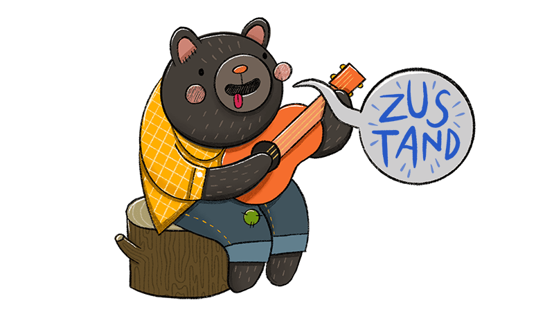
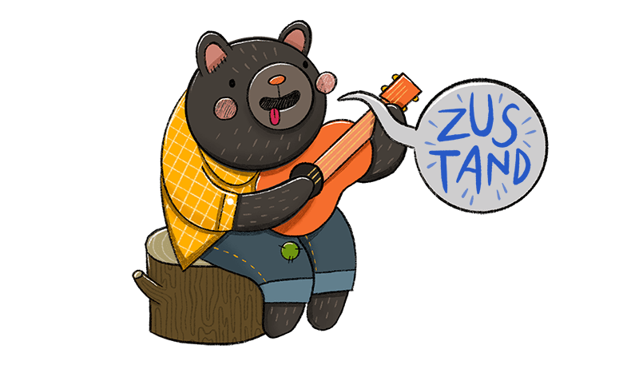

Work Experience.
Inspien.
2022.12 - 2023.02
풀스택 / 인턴
Description
EDI 문서를 웹상에서 서비스 사용자가 원하는 형식(Excel, pdf, HTML, XML)으로 읽거나 작성하고, 변환한 파일을 다운로드할 수 있도록 하는 웹 서비스를 담당했습니다.
겨울방학간 진행되는 학교-학점 연계 인턴쉽을 3개월간 수행하였습니다. 기획부터 시작되는 새로운 프로젝트에 투입이 되었고, 새로운 프로젝트이지만 원래 존재하던 프로젝트에서 기본틀을 따왔습니다. 때문에 기존 코드들을 이해하는데 많은 투자를 해야 했지만, 퇴근 후 스터디, 팀원분들의 도움으로 맡은 과제를 끝까지 마무리 지을 수 있었습니다. 또한 B2B 기업에서 다루는 프로젝트의 구성을 둘러보는 좋은 경험을 하게 되었습니다.
What I did
- XML to Excel 스크립트 제작
- XML to Excel 렌더링 기능 구현
- 변환된 문서 다운로드 기능 구현, 화면 구현
- DB Schema 작성
Tech Stack
JavaScript, React, Redux, JAVA, Spring, Groovy, JAX-RS, Maria DB
Scop.
2020.04 - 2021.02
풀스택 / 개발총괄
Description
사용자의 사진 취향을 AI를 통해 분석하고, 그에 맞는 사진관 및 사진작가를 매칭해 주는 플랫폼 어플리케이션을 담당하였습니다.
스타트업의 초기멤버로 일하였으며, 외주사에 MVP모델을 의뢰하여 수령 후 추가기능 기획 및 개발과 유지보수 업무, 개발팀원 인사관리, 마케팅/디자인팀과의 소통 업무를 수행하였습니다. 베타터스터 50명, 입점 사진관 3개를 대상으로 실제 운영을 진행 했습니다. 회사에 기여할 수 있는 방법에 대해 많은 고민을 하였고 팀원들과 합숙까지 해가며 열정을 쏟아본 값진 경험이었습니다.
What I did
- 하단 네비게이션 기획, 구현
- 보유한 쿠폰 화면 구현
- AI모듈 API호출 및 AI를 활용한 사용자 취향분석 페이지 구현
- 개발팀 인사관리
- Android / iOS AppStore 배포
- UseCase Flow에 따른 앱 테스트케이스 작성
Achievement
- 글로벌청년창업사관학교 1기 유일 학생기업 선발 및 입교
- 앱을 대상으로 기술보증기금 1억원 유치
- 예비창업패키지 선정
Tech Stack
JavaScript, TypeScript, Angular, Ionic, Firebase, AWS EC2
Projects.
WORDLE.
2023.12.25 - 2023.12.31
개인
Description
토이프로젝트로 혼자 진행한 5음절 글자 맞추기 게임 (WORDLE) 입니다.
상태 업데이트 로직 개선과 클릭 이벤트 지연에 관한 크로스 브라우징 이슈를 핸들링 하였습니다.
What I did
- 크로스 브라우징 터치이벤트 핸들링
- 전역 상태를 사용하지 않고 구현
- 반응형 구현
- 애니메이션 및 리팩토링 진행 중
Tech Stack
TypeScript, React, Tailwind
Fundy-prototype.
2023.11 - 2023.12
팀 / 프론트엔드
Description
인디게임을 펀딩할 수 있는 웹 서비스의 프로토타입을 개발하였습니다 (결제모듈 제외). 백엔드 개발자 1명과 협업을 하였으며, 저는 프론트엔드와 디자인을 담당했습니다
기획 단계에서 소프트웨어 아키텍처에 대해 고민을 많이 한 프로젝트입니다. Layered, Proxy, Server-Client, FLUX 등을 적용하였고, 각 아키텍처의 장단점과 사용 이유에 대해 알게되었습니다.
What I did
- 웹사이트 디자인
- UI / UX 구현
- 로그인, 회원가입 기능 구현
- 후원 및 환불 기능 구현 -> 결제모듈은 붙이지 않았습니다.
- 프로젝트의 상세페이지 및 개발노트의 뷰를 위한 pdf 렌더링 구현
- API 통신 구현
Tech Stack
JavaScript, React, Zustand, Styled-Components
Skills.
-
오너십을 중요시합니다
회사는 제 자아를 실현하는 공간이 아니라고 생각합니다. 비즈니스 가치를 창출하는 것이 첫 번째 목표이고, 그러기 위해선 구성원이 오너십을 지녀야 한다고 생각합니다. 오너십을 바탕으로 주체적인 업무환경을 만들어야 회사가 성장하고, 그 과정이 곧 제 성장이라고 믿습니다. -
비개발적 요소를 고민합니다
로딩 시간이 지루하다면, 로딩 알고리즘을 개선할 수 있습니다. 하지만 로딩 시간 자체를 없애거나, 다른 것으로 대체해보는 것은 어떨까요? -
협업과 소통을 즐깁니다
프론트엔드 개발자는 디자인, 기획, 백엔드 등 다양한 분야의 팀원들과 소통해야할 기회가 많습니다. 저는 토론과 소통을 즐기며, 제가 프론트엔드를 선택한 이유이기도 합니다. -
Why? 의 가치를 높게 삽니다
프론트엔드는 트렌드가 비교적 빠르게 변화합니다. 새로운 도구의 사용법을 배우는 것은 즐거운 일이지만, 그렇다고 사람이 도구에 쫓길 수는 없습니다. 왜 그 도구를 사용해야 하는지 명확히 하는 것이 먼저라고 생각합니다.
Core Skills


 


Study.
국민대학교.
소프트웨어 전공
2024.06 졸업예정